Your Own Water-Power Plant
Harness that stream and forget the electric company. Here's the first of three installments of the five-part article printed by Popular Science that very concisely sketched out every step necessary for establishing a small water-power plant on a farm or homestead.
By C.D. Bassett
January/February 1972
REPRINTED COURTESY OF POPULAR SCIENCE MONTHLY © 1947 POPULAR SCIENCE PUBLISHING CO., INC.
BACK IN 1947, POPULAR SCIENCE PRINTED A FIVE-PART ARTICLE THAT VERY CONCISELY SKETCHED OUT EVERY STEP NECESSARY FOR ESTABLISHING A SMALL WATER-POWER PLANT ON A FARM OR HOMESTEAD. THAT INFORMATION IS JUST AS VALUABLE TODAY FOR MANY OF MOTHER'S READERS AS IT WAS 25 YEARS AGO AND POPULAR SCIENCE HAS KINDLY GIVEN US REPRINT RIGHTS TO THE WHOLE PACKAGE. YOU'LL FIND THE FIRST THREE INSTALLMENTS IN THIS ISSUE AND THE LAST TWO SECTIONS OF THE SERIES WILL BE PRINTED IN MOTHER NO. 14. TURN THE PAGE FOR
PART ONE
Many farms, ranches, and other fair-sized tracts of land embrace at least one brook within their limits. In most cases, the idea that a small stream can provide a useful source of power has never occurred to the property owner or, if it did, has been rejected as silly. The fact remains, nevertheless, that impressive advantages can spring from small water-power installations.
Electricity can be generated for general use, for pumping water, and for stand-by or emergency purposes; and the pond that is usually created can serve additionally as a means for watering livestock in dry times, for fire-fighting, as a swimming pool, as a place to raise fish for sport or as a "crop", and for landscaping or scenic purposes.
Power can be obtained from any flowing stream, no matter how small. Whether it is desirable to harness this power depends on two factors. First, does water flow all the year round, even in the late summer months? Second, does enough water flow to make the harnessing of it economically sound? The first factor is, of course, known to the property owner by observation; the second may be determined by simple measurements.
What's the least amount of power that is worth developing? There is in this country at least one water-wheel manufacturer who makes a line of small-capacity units, and this company's smallest hydroelectric unit develops 1/2 kilowatt. From this it can be inferred that, in this company's experience, it is not economically wise to harness a stream that will not develop at least 500 watts dependably at the switchboard. Half a kilowatt will light 10 fair-sized lamps or supply 2/3 hp. to operate, say, a deep-well pump. With this figure in mind as a criterion, the reader can make a preliminary reconnaissance of the water power available on his property. The chances are he will be surprised; even a seemingly insignificant stream can deliver many times this minimum.
The power available at the site of a water wheel (that is, before deductions for inefficiencies in the wheel and generator) is expressed in this formula:
Here Q is the cubic feet of water passing through the wheel in one minute; H is the "head" or vertical distance in feet through which the water falls; 62.4 is the weight in pounds of 1 cu. ft. of water; and 33,000 the number of foot-pounds per minute in I hp. A number of methods exist by which the variables Q and H can be determined, but before considering them, it's well to examine first the possible sites for the dam and wheel, since they will necessarily affect the amount of head secured.
The location of the dam, as suggested in Fig. 1, should be governed by two principles. It should be placed where the greatest useful head is obtainable, that is, where the greatest fall occurs in the shortest length of stream. Such a site is often indicated by a natural waterfall, by a conspicuously steep slope, or by the swiftness of the current. The second locating principle is a simple matter of cost: a dam should be placed where it can be smallest and still impound the most water. This means, in general, that it should be placed where the stream valley or cut is narrowest.
The site of the water wheel, Fig. 2, may be either at the dam or some distance below it. The former location is the more common, being simpler to build and eliminating the need for a pipe or penstock to deliver water to the wheel. Disadvantages include the fact that the spillway must be of ample capacity to protect the powerhouse in time of high water, and the fact that only the "artificial head"-that created by the dam itself-is available. In cases where the ground falls away abruptly below the dam site, the "divided-flow" layout may be desirable, for it greatly increases the head.
Another preliminary calculation should be made as to the height of the proposed dam. This is restricted, as a rule, only by the height of the valley walls at the site, and by the materials, equipment, and money available for building it. The higher it is, the greater the head and the larger the pond that will be created. "Pondage"-water stored for use in times of peak demand-is an important factor in water power calculations. Power is rarely needed 24 hours a day, and construction of a dam of sufficient height to provide water storage will greatly increase the power available at the time of day required.
If, for example, a wheel is to be run for 16 hours a day, and if a dam is built that will impound all water flowing into the pond during the idle eight hours, the power capacity will be increased by 50 percent. Don't neglect to distinguish between "live storage"-the volume of water represented by the difference in height of the spillway flash boards and the wheel intake-and "dead storage"-the volume of water below the level of the wheel intake. The former is power banked against a time of need: the latter is worthless, powerwise.
Once the dam and powerhouse are tentatively sited, and the height of the first is provisionally set, it is time to measure the power available. Assume that all water flowing in the stream can be made to flow through the wheel, which is a fair assumption on small installations. This flow (Q in the power formula) can be determined by the "weir method", which involves constructing a temporary dam of controlled proportions and which will be detailed in a subsequent installment, or by the "float method", which is theoretically a trifle less accurate, though still quite satisfactory.
The float method (Fig. 3) involves the formula:
Q=A X V X 60
in which Q is the volume of water flowing in cubic feet per minute, A is the cross-sectional area of the stream in square feet at the site, and V is the average velocity of the stream at this point, expressed in feet per second.
Select a length of the stream that is fairly straight, with sides approximately parallel, and unobstructed by rocks or shoals for a distance of about 100'. Stretch a taut wire squarely across the stream near the middle of this length and measure the width of the stream here in inches. Mark this width off on the wire and divide it into ten equal divisions. From the center point of each division, measure the depth of the water in inches. Then average the depth figure by adding each value and dividing by 10. The cross-sectional area of the stream, A, is now secured by multiplying this average depth by the width, and dividing the result by 144 to obtain the answer in square feet.
Your next step in determining Q is to measure the rate of flow. Using a steel tape, mark off a course along the bank that is 100' long; the mid-point of this course should be at the line where the cross section was measured. Stretch wires or rope tautly across the stream at each end of the course, and make a float by filling a bottle so that it rides awash. Provide it with a pennant so that you can follow it easily. Then set the float adrift in the middle of the stream, timing its progress over the course with a stop watch, beginning just when the pennant passes the first wire and stopping just as it passes the second.
Make a series of runs, averaging the results. The speed of the float in feet per second is then the length of the course divided by the average time. This result is not, however, suitable for immediate use in the flow formula, since not all the water in a stream flows as rapidly as that in the center and near the top. If you multiply the float speed by the coefficient 0.83, the resultant value will serve as V in the flow formula.
Given an estimate of the amount of head to be present at the wheel, you can now make a rough determination of the horsepower your stream can provide. It's worth emphasizing, though, that this figure is necessarily only as accurate as the measurements that produced it, and that the power indicated is that present at the time of measuring. A single stream-flow value is not of itself particularly useful unless it is obtained at the time of lowest water, usually in the late summer months. Moreover, even if you have measured the flow at slackwater time, the figures should if possible be supplemented by others secured during maximum springtime flow, so that you can calculate the size of spillway needed to prevent damage to your installation in times of high water.
It's a good practice, for backyard engineers as well as for professionals, to refine, cross-check, and test your measurements by all means at your disposal. Such checks will not only reduce the change of disappointment in the final result, but will also permit calculated economics in construction and greater efficiency in operation.
Your estimate of the head present at the wheel, for instance, should be carefully checked, since head is a vital element in the efficiency of any water-power project. Several methods for determining the head rather precisely will be given in the next installment, together with the weir method for measuring flow. Subsequent installments will consider types of dams, method of construction, wheels best suited to small plants, and plans for building them.
Before you begin even a preliminary reconnaissance of water power on your property, the writer suggests you secure a looseleaf notebook to be devoted solely to the project. Develop the habit of neatly entering all data as it is obtained, not forgetting to note dates and stream conditions at the time measurements are made. Such a record is a great help in performing sound calculations and producing excellent results.
This table shows the quantity of water passing over a rectangular weir in cubic feet per minute (cfm) for each inch of notch width. Depth D is read as a combination of the lefthand column and the top row. For example, if the depth over your stake is 5 3/8", follow oer 5 (fifth row) to 3/8 (fourth column), and read the value as 5.01 cfm. Don't forget that this figure should now be multiplied by the width in inches of your notch. Measuring the flow of water in the stream or brook on your property is the logical first step in planning a small waterpower project. The float method of making this measurement, described in last month's installment, is generally the easiest to perform and, if done carefully, is accurate enough for most purposes. If, however, a stream is so shallow at low-water time as to impede the progress of a weighted float, the weir method of measuring flow has advantages. Essentially a kind of water meter, a weir is a rectangular notch or spillway of carefully controlled proportions located in the center of a small temporary dam. Two simple measurements permit the volume of flow to be accurately calculated.
Before constructing the dam, measure the depth of the stream at the site; the depth of the weir notch, M in Fig. 1, should equal this. Since the dam need not be permanent, simple plank or tongue-and-groove lumber will serve adequately. No water must flow except through the weir, so care should be taken to seal the ends and bottom of the dam by extending planks into the banks and below the bed of the stream. Clay or loam puddling on the upstream side will stop minor seepage. Be sure the dam is perpendicular to the flow of the stream.
The weir should be located in the center of the dam, with its lower edge not less than 1' above the surface of the water below the dam. This lower edge should be accurately leveled. Both this and the vertical edges of the weir should be beveled with the sharp edge upstream; a 1/8" flat on the bevel will keep the edge from breaking down. Proportion the weir so that its length L is not less than 3M, and larger if possible.
Drive a stake in the stream bed at least 5' upstream from the weir, pounding it down until its top is exactly level with the bottom edge of the weir. Allow the stream to reach its maximum flow through the weir and then measure with a ruler the depth in inches of water over the stake. Referring to the table on this page, you can now read the number of cubic feet per min. of water for each inch of L, the weir width. If you multiply the figure from the table by L, the result is the total amount of water flowing in cubic feet per minute. which is Q in the horsepower formula given last month.
If your stream is already dammed, there is no need to construct another dam just to measure flow. It is quite possible to employ the existing dam, using its spillway as a weir provided that all water can be made to pass through the spillway. Construct a wooden or metal frame to fit the spillway and seal it in place snugly. The center of this frame should incorporate a properly proportioned weir notch. As before, M should equal the depth of the water flowing through the spillway before the weir is installed, and L may in most cases be half the width of the spillway.
To get an accurate estimate of available horsepower, you will need a precise figure for H, the head of water that will be present. Head may be defined as the vertical distance in feet from the surface of water in the pond behind the dam to the surface of the stream below the dam at the site of the wheel. This figure may be obtained by any of several methods in cases where a dam is already present, and with scarcely greater difficulty at the site of an unbuilt dam.
Measuring a difference in elevation can be quickly and accurately done with an engineer's transit and leveling rod. But since not everyone has access to these instruments, and since those who do would not need instruction on so simple a job as running a level, we'll pass on to other methods.
Figure 2 illustrates a very simple way of measuring a vertical distance. The equipment required is a carpenter's level, a folding rule or steel tape, a 1" by 2" by 6' board with two edges planed parallel, two wooden pegs, a stake, and a C-clamp. These are items that can be found in almost any home, and certainly any farm. Though the method can be somewhat tedious if the difference in elevation is large, the results will be quite accurate with ordinary care in leveling and measuring. Note in the drawing that in the case of a pre-existent dam, one or more measurements needed to carry around the edge of the dam are subtracted from rather than added to the total.
Less practical in most cases, though still of occasional special value, are two other ways to determine head. Elevations can be measured quite readily by the techniques of photographic surveying. For those who are familiar with the procedure, it is a simple matter to take the required pictures in the field and then scale the required elevation at the desk from the developed photographs. Another method involves the use of a barometer, either mercury or aneroid, to indicate differences in height. However, this method is useful only where the head to be measures is considerable, say, more than 25', and calls for special techniques to hold the probable error down to acceptable proportions. Except in unusual circumstances, the writer recommends that the method in Fig. 2 be employed, inasmuch as it requires little special equipment and with ordinary care gives good results.
With sound figures for both H and Q, you are now ready to calculate the available horsepower of your installation with the formula given in the first installment. If the power is found to be sufficient to warrant continuing with the project, say 2/3 hp. at the least, your next step is to determine the nature of your power requirements. Here individual variations are so many as to make it difficult to outline a specific procedure. It's possible, however, to suggest factors you should consider in planning your power plant.
Some of the uses to which small-capacity installations are successfully put include directly powering pumps, mills, machine tools, or other small-demand machinery; and driving a generator to supply electricity for either fighting or power purposes. The latter type of installation is of course the more flexible and generally useful. Determine, then, the uses you propose for your water power, and tabulate the horsepower required after each item. In the case of electric motors or appliances rated in amperes or watts, remember that watts are volts times amperes, and that 746 watts are equal to 1 hp.
From this tabulation, the peak load can be determined. This is the sum of the power demands made by different pieces of equipment that may probably be in use at one time. Knowing power and load, you can now determine if the proposed installation will be on a sound basis.
Do not use your available horsepower figure directly, since deductions should first be made for losses in the water wheel and in the generator, if one is to be used. For small installations, assume wheel efficiency to be 75 percent; many small wheels will better this, but the assumption will provide leeway for possible optimism in measuring H and Q. Generator efficiency can be assumed to be 80 percent, a figure that will also be bettered in many cases but is on the safe side. Thus switchboard power may be expressed at .75X.8Xhp, or .6 of the available horsepower.
At this stage of the game, it's well to mull over the possible variations and combinations, rather than to proceed with specific construction plans. Consider for example the decision required if the indicated switchboard power will seemingly handle the peak load-whether to build a dam just large enough to do this job, or to build one substantially larger to handle possible future increases in power requirements. The former choice will be obviously cheaper at first but may not be so in the long run, since power demands have a way of growing and since it is rarely satisfactory to increase the structure of an existing dam.
If the peak load is apparently too high, various possibilities should be considered. Will "pondage"-water stored behind the dam overnight or in slack periods-help out? Can the use of equipment be dispensed with? Is the project necessarily a year-round enterprise, or can the low-power characteristics of the dry season be ignored? A word of caution on these points may not be amiss: it's far better to plan an installation that wiil provide more power than you need than one which doesn't t supply enough.
Whether, in the event that you decide to generate electricity to use AC or DC is another decision to make. In circumstance where the generator must be located some distance from the load, AC is the only choice, for DC transmission losses would be too high, amounting in small installations to a prohibitive percentage of switchboard power. If your buildings and equipment are already wired to receive one type of current, it would obviously be sensible to fix on the same type of power; if for example your farm is already wired for a battery-type lighting system, there would be little reason to revamp the installation for AC. If on the other hand you are starting from scratch, the writer recommends the use of DC wherever possible. An AC generator must be closely regulated at or slightly above synchronous speed, and close regulation requires complicated governing equipment that is tricky to build or expensive to buy. A compound-wound DC generator, on the other hand, provides inherently close voltage regulation over a wide speed range; and even a shunt-wound DC generator with a direct-acting field-rheostat regulator would be satisfactory.
Selecting the right wheel for your plant is perhaps the final step in your preliminary planning. There are three general types of water wheel-impulse, reaction, and gravity-and several fairly common varieties of each type. However, for small plant purposes, it is possible to narrow the number dowry to those shown in Fig. 3. Note that two types of reaction wheels, the Francis and the propeller, are shown, and but one variety of gravity wheel, the overshot one.
The impulse or Pelton wheel, operated exclusively by the force of the water from the jet, includes among its advantages very slight leakage and friction losses, good efficiency under varying flows, and a sufficiently high shaft speed to drive a generator. It is more resistant to pitting by water containing sand, silt, or minerals than the reaction type. Its disadvantages include the fact that it cannot use all the available head, is larger than a reaction wheel developing the same power, and will wallow in high tail water. It must be mounted as close to the tail water as possible.
The reaction wheel, either the Francis or propeller type, is turned by the fall of water through a duct or pipe in which the wheel is confined. It is the most compact of all wheels for a given power, uses all of the available head, and operates at a satisfactory speed for direct coupling to a generator. It is an efficient wheel over a wide range of conditions, and it can be mounted at any convenient height above tail water. Disadvantages include rapid corrosion with silted water, and relatively high leakage and friction losses, especially in small units.
Finally, there is the overshot gravity wheel, which is turned largely by the weight of the water and partly by impulse. It has good efficiency under varying flow, and is unaffected by sand, silt, or minerals in the water. Gravity wheels turn at a low speed, which is undesirable for driving a generator or highspeed machinery, but suitable for some pumping and grinding applications. Such a wheel will wallow in high tail water, is the largest wheel for a given power, and will be obstructed by ice in winter unless housed.
Concrete, though desirable, isn't necessary for damming a small stream. Beavers have gotten by for years without it. Suitable materials can be found on almost any farm. Logs, roughhewn timber, rock, masonry, planking, gravel, sand, and clay are all useful. Choose the materials most readily available on your property, or the least expensive if you must obtain them elsewhere.
You will have determined, on the basis of the first two installments of this series, the height and width of the dam you will need to convert your stream to power. The summer months provide an ideal time for its construction, for then most brooks are at their lowest level and the water will not impede the progress of work.
Four basic types of small dams are shown in the accompanying drawings. All are adaptable in general to the kind of materials likely to be on hand and also to the head of power desired.
There are two basic principles of design to bear in mind no matter which you build. First, a dam should be sealed both above and below its foundation to prevent the seepage of water through or under it. Seepage through a clam, if per mitted, weakens the structure and will eventually break it; that under a dam will undermine its foundation. Then, too, some means must be provided to prevent undermining of the dam by the water that flows or spills over it.
In addition, you should check with your local authorities and possibly file plans for your dam with them. States have widely varying regulations, some extremely lenient and some fairly strict. In most, general supervision comes under the State board of health, but a visit to your local county offices will give you correct guidance.
Figure 1 illustrates the earth dam, which blends well with its surroundings and hence is particularly suited where landscaping or scenic qualities are to be considered. Sealing this type of dam is most important since seepage will literally carry it away if allowed to progress. The seal is put in first and the dam built around it. How far down it should go depends upon the kind of soil. A sand foundation, for instance, requires the seal to extend deeper than clay. If planking is used, it would be well to apply a protective coat such as tar or creosote.
A general pattern for depositing the earth fill is shown in the drawing, but it is not necessary to follow it unless different types of earth are available. Deposit the fill by layers, rolling and tamping each layer well. Then protect the waterside surface from erosion by covering it with a matting woven from brush. Plant turf on the top and downstream side to hold the earth.
Such a dam obviously cannot have water spilling over its crest since this action would wash it away. Two suggestions for handling the excess water are shown. The spillway must be of some material, such as masonry or planking, resistant to the erosion of rushing water, and the sides must protect the open ends of the earth dam from spillage water. An alternative method of handling runoff water is with drain tiles instead of a spillway. Some means must be provided for shutting them off. A simple cover on the upstream end would serve.
Figure 2 shows the framed dam, which likewise can be easily built, particularly on a farm where lumber in any form from logs to planks is abundantly available. Each frame consists of one joist on which the surface timber is laid and one or more struts. Once the height of the dam is determined, the size of individual frames will vary depending on the contour of the gulley, those frames located at the lowest part being the largest. The frames are spaced according to the support the surface timber needs, that is, the thinner the surfacing the more supports.
Lay the planking surface or roughhewn timber horizontally and edge to edge across the frames, and bolt or spike each in place. Calk the joints and apply a protective coating. Fill is put in behind the downstream side. Build the spillway entirely of planking or similar material.
The gravity dam, shown in Fig. 3, relies upon its weight for its stability. This dam would be most feasible where large rocks or field stones abound. Bricks, concrete or cinder blocks, and even chunks of broken concrete pavement are also excellent materials. The dam is strictly a masonry type, each block being laid with mortar.
Length is not a critical factor for any of these three dams, but it is important for the arch dam illustrated in Fig. 4. The placement of such a dam in a gulley is limited not only to the point of least width but also to the point where the banks are highest. Otherwise, this dam would impound little water. It would seem unwise to build one to span more than a width of 10'. If the heavy timber is used only as a frame on which to spike or bolt a surface of planking, as shown in one of the drawings in Fig. 4, the number of timber arches will depend on the strength of the planking and also on the height of the dam.
Only earth foundations are considered in the drawings, but you may be fortunate enough to have a solid rock foundation on which to build. In that case a seal below the foundation will not be necessary, but some means must be provided to anchor the dam to the rock, such as with anchor bolts in the case of either the framed or gravity dam. Likewise the dam should be sealed at the rock foundation to prevent seepage under it.
In most instances it will be found best to restrict the width of the spillway for excess water to some part of the total length of the dam. This will always be necessary in the case of an earth dam to prevent washing. The spillage water may be allowed to pour over the entire length of framed, gravity, and arch dams, however, if the precautions shown in Fig. 5 are taken.
If the downstream side of the dam, or of the spillway, is a curved hard surface of masonry or timber approximating the natural curvature of the water flowing over, it will guide the spillage water so it will be directed downstream without actually falling. Such a curved spillway surface is particularly satisfactory for an earth dam. Large rocks, bricks, or other hard objects placed on the downstream side of a spillway not having a curved surface will break the force of the free-falling water and prevent erosion.
The spillway in its simplest form takes the shape of a rectangular depression in the crest of the dam. It should usually be large enough, to carry off sufficient excess water so that impounded waters will not top the dam at any season of the year. This, of course, is quite a problem, since accurate determination of spillway capacity requires a knowledge of the total area drained by the creek being dammed plus data on the amount of rainfall at all seasons.
However, most of us will know whether or not the creek we are damming stays within its banks during the year. If it does, then a safe rule to apply would be to make the area of the spillway equal to the cross-section area of the creek at the dam when it is brimful or just ready to flood. The formula is illustrated in Fig. 6.
If the stream does flood, then either construct a dam that in an emergency can allow water to top its full length or build some sort of floodgate into the dam so it can be opened when necessary. One form such a floodgate could take is a group of drain tiles through the dam, as shown in Fig. 1.
The height of the dam you build will be determined by the area of the land to be covered by the impounded water. In general, the higher the dam, the greater the area covered by water above it.
All vegetation, brush, floatage, and the like in the area to be flooded and for about 15' around it should be burned out or otherwise cleared before the dam is built. This keeps down the breeding of mosquitoes and helps retard pollution. It is required in the regulations of some States and is a wise precaution even when not covered by law. In addition, all trees in the area to be flooded should be cut reasonably close to the ground.
WE WILL CONCLUDE THIS SERIES NEXT ISSUE WITH PLANS FOR A 3 HP PELTON WHEEL AND A 5" OVERSHOT WATERWHEEL.
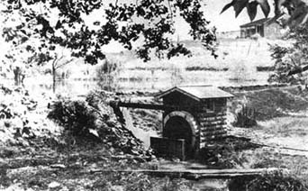
Fitz Water Wheel Co. This 4"" impulse wheel, built for war requirements was direct-connected to a small generator. It can be run off an ordinary water faucet. Note the removable nozzle and the tiny bucket, lower right .
|
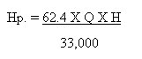
With the straightedge held level, vertical height between a pair of pegs is read off and noted down.
|
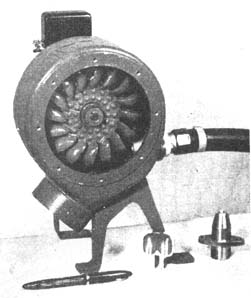
Your last measurement should be to the surface of the water at the site selected for the water wheel.
|
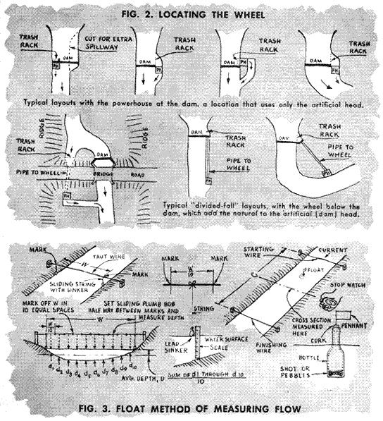
|
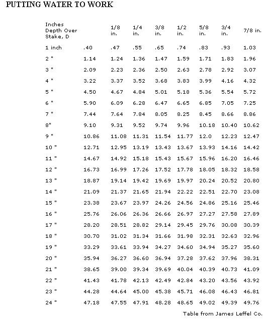
|
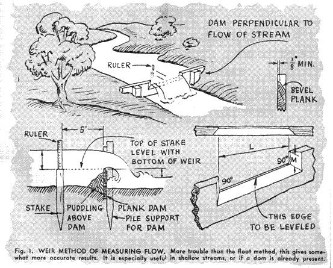
|
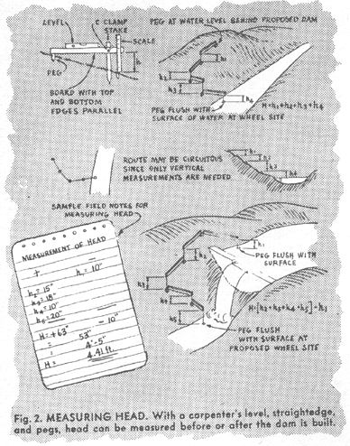
|
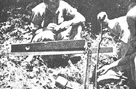
|
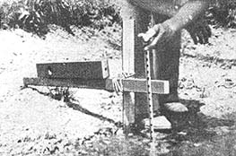
|
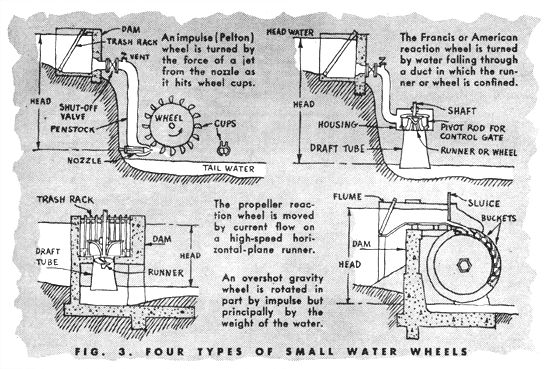
|
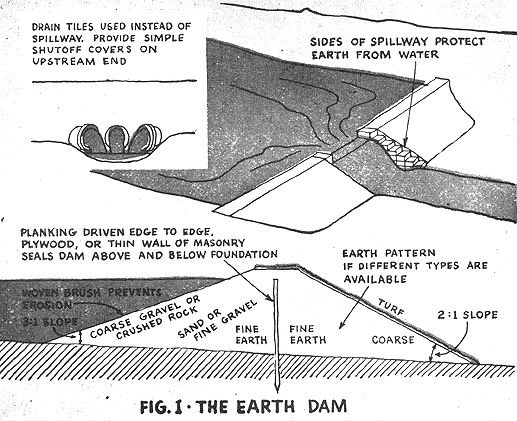
|
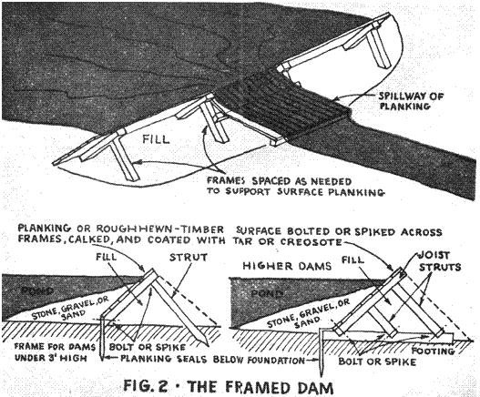
|
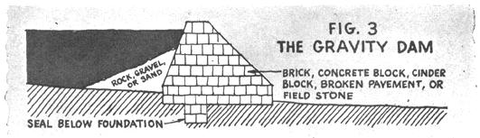
|
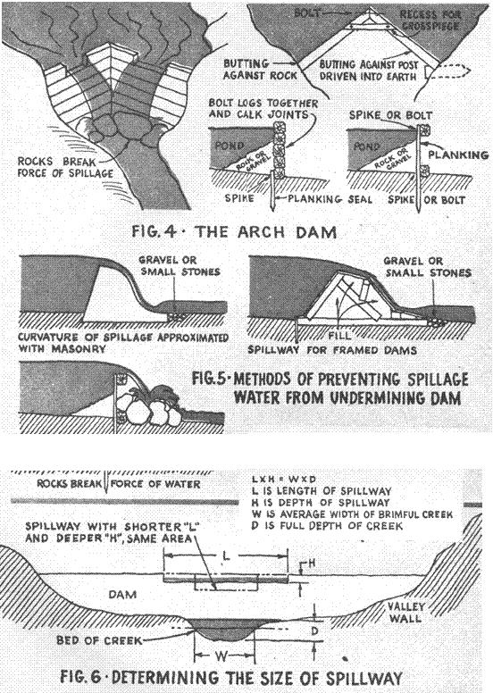
|

|